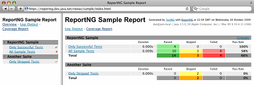

THIS SOFTWARE IS NO LONGER BEING MAINTAINED. VERSION 1.1.4 IS THE FINAL RELEASE.
IF YOU WOULD LIKE TO MAKE YOUR OWN UPDATES, YOU CAN
FORK IT ON GITHUB.
ReportNG is a simple HTML reporting plug-in for the TestNG unit-testing framework. It is intended as a replacement for the default TestNG HTML report. The default report is comprehensive but is not so easy to understand at-a-glance. ReportNG provides a simple, colour-coded view of the test results.
ReportNG generates 100% valid XHTML 1.0 files. The output can be customised by over-riding the default stylesheet with your own CSS file.
Since version 0.9.0, ReportNG also includes a second reporter that produces JUnit format XML output. This enables TestNG to integrate with tools, such as Hudson, that understand these XML files. This is an alternative to the JUnit XML reporter that is provided with TestNG. The ReportNG implementation maps each test class to a single <testsuite> element, resulting in one XML file per test class. This is different from the approach taken by the core TestNG implementation. The ReportNG version of the JUnit reporter ignores TestNG's notion of suites to produce output that is closer to what you would get if you were using JUnit.
The current version is 1.1.4, which has been tested with TestNG 6.2 (it should work with any version of TestNG after 5.0, but this has not been tested).

To use the reporting plug-in, set the listeners attribute of the testng element in
your Ant build file. This attribute takes a comma-separated list of
reporter class names. The class names for the ReportNG reporters are:
org.uncommons.reportng.HTMLReporter
org.uncommons.reportng.JUnitXMLReporter
You may also want to disable the default TestNG reporters by setting the useDefaultListeners
attribute to "false".
Your Ant task will probably look something like this:
<testng classpathref="test-path"
outputdir="${test-results.dir}"
haltonfailure="true"
useDefaultListeners="false"
listeners="org.uncommons.reportng.HTMLReporter,org.uncommons.reportng.JUnitXMLReporter">
<xmlfileset dir="." includes="testng.xml"/>
<sysproperty key="org.uncommons.reportng.title" value="My Test Report"/>
</testng>
The reportng-1.1.4.jar and velocity-dep-1.4.jar files must be
included in the classpath used to run the tests.
If you use Maven, you may find Marcin Zajączkowski's instructions helpful.
If you are using Gradle, Tomek Kaczanowski has written these instructions on how to use ReportNG.
If you are using the command line, an IDE plug-in or some other build system, please refer to the TestNG documentation to find out how to register custom listeners/reporters.
The following optional system properties can be set (via nested <sysproperty> elements
within the <testng> element) in order to customise the report output:
org.uncommons.reportng.coverage-reportorg.uncommons.reportng.escape-outputorg.uncommons.reportng.failures-only"false". If set to "true", the generated report will
not list successful tests.
org.uncommons.reportng.frames"true". If set to "false", generates the HTML report
without using a frameset. No navigation page is generated and the overview page becomes the
index page.
org.uncommons.reportng.localeorg.uncommons.reportng.show-expected-exceptions"true" or "false" to specify whether the stack-traces of expected
exceptions should be included in the output for passed test cases. The default is "false" because
the presence of stack-traces for successful tests may be confusing.
org.uncommons.reportng.stylesheetHTMLReporter. This allows the appearance of reports to be customised.
See the default
stylesheet for the classes and selectors that can be styled.
For an example, see this version of the
sample report, which uses the bundled hudsonesque.css file
to customise the report's appearance.
org.uncommons.reportng.titleorg.uncommons.reportng.xml-dialectJUnitXMLReporter. If set to "testng"
(the default), then skipped tests appear as "skipped" in the XML. This is suitable for use with
tools such as Hudson that understand the TestNG
dialect of the XML format. Other tools, such as
Ant's junitreport task,
do not have a notion of skipped tests. For these tools the dialect can be set to
"junit" and skipped tests will be marked as failures.
org.uncommons.reportng.velocity-log